教育推荐离线评估中的序列捷径
Youssef Jdidou 在卡萨布兰卡哈桑二世大学 ENSAD 完成的这篇研究，英文原题为 Learning the Platform, Not the Learner: Sequencing Shortcuts in the Offline Evaluation of Educational Recommender Systems and LLM Rankers。作者在 2026 年 11 月 24 日（UTC）首次提交预印本，比较八个公开数据集上学习者历史、课程组织和群体后继转移对评测结果的贡献。作者公开的评估包仓库可访问，本次核对未运行作者实验。arXiv:2611.33240 · 作者评估包
教育平台日志中的下一道题常由作业顺序、掌握规则或选题引擎决定。离线评测只奖励命中最终发生的活动，跟随平台路径的模型也能得到高分，即使它没有掌握学习者接下来需要练什么。
1. 背景和问题
1.1 只有一个被记录的下一活动
在序列推荐里，用户前面做过的活动形成输入，紧随其后的一个活动充当唯一目标。模型得到成功的条件是把这个目标排到前面。电商会话中，下一次访问已经受曝光和界面排列约束。在在线练习中，内容如何进入用户视野往往更加明确。教师布置某套作业，系统随后在有限题池中出题，学生连做若干题后才能进入下一组。另一个学习者在同一套作业的同一阶段，虽然此前答题过程和掌握情况不同，也可能遇到同一道题。此时一个记得全站常见转移的排序器有很大机会命中，编写可预测路径的正是产生标签的教学平台。
论文把这种情况与教育产品真正需要解决的选择问题分开。辅助练习推荐通常希望在多个可选活动间做决策，例如为一名刚答错分数加法的学习者选择相近的补充题，或者在已经掌握的技能之后安排一个挑战稍大的活动。历史数据通常只有该学习者走过的一条路径，以及其在实际遇到活动上的结果。对于当时可做但未做的活动，数据没有记录完成概率、作答后掌握变化或长期留存。进一步说，即使下一活动由学习者点击，点击也可能反映导航层级、已有作业要求、重复练习偏好或内容位置。以准确预测实际活动为目标可以诊断序列建模，却只能给教学收益评估提供间接证据。
结果标签有限也让几种评测决定显得特别重要。其一是一步的粒度。如果同一道题的连续交互被当成不同的活动，记忆最近题号就会获得轻松命中。其二是候选池。如果负例来自几千道题的均匀分布，真题可能是唯一一条属于当前技能的候选。其三是作业分配时间。如果对每人只留他最后一次新活动，其他人的训练日志仍可能包括待预测样本发生之后的出题策略。作者针对这三点把活动合并、候选构造和时间协议放入同一审计流程，避免把数据集使用习惯当成模型收益。
1.2 群体转移为何比课程表更有解释力
课程结构在论文中有宽窄两层。窄层指总体流行度、活动在课程中的先后关系以及题目所属单元。宽层还包括从训练日志学到的全站转移频率。后者有机会恢复正式课程表没有写出来的约束，例如某题常与一组题一起分发、某个入口中只有几种后续活动、老师倾向在同一阶段分配相近题目。两个有不同历史的人若最后一个活动相同，群体转移的排序打分仍一致。有限候选的历史过滤会改变他们最终看到的列表，因此这里的结构基线应理解为打分信号只使用末项与共享统计，读取过往已完成活动的资格过滤仍统一应用。
这个定义避免把全部路径信号都说成教师命令。群体转移可以同时吸收教师规则、界面设计、学习者真实喜好和共同知识难点。较高的结构份额只说明这部分共同规律已经足以接近本轮比较的最佳离线得分。想区分老师布置、平台推荐与学习者主动发起，需要额外事件标签。有这种标签的均一教育平台和 EdNet 各有不同的产品入口，即使能按日志分出发起方式，也只能读当时实际发生的记录。在没有发起标签的场景中，是否跨越所属容器以及训练中有没有见过该转移可充当可复算的切面，语义需单独标出。
教育数据还形成多种几乎不能直接横比的任务。ASSISTments 一组数据中的活动是题目，另一组直接把整套题当作一个活动。EdNet 把同组题目的题包作为预测单位，Eedi 因为时间戳只能精确到分钟而以小测为活动。课程组织生效的层级决定了候选数量、目标出现频率和课程约束有多强。一个在小测排序上接近零点五的 NDCG 与另一个在题包全目录上接近零点零四的 NDCG，没有共享的分母和难度。论文逐集比较同一目标上的结构份额和相对结构增量，保留原始绝对分供读者判断误差规模。跨数据集的中位数描述的是这批评估的分布，无法替代某个产品的目标量。
在课程阶段相邻的日志中，同一个模型还可能兼具两种能力。它既能从共同出题规则里恢复明确的次序约束，也能利用学习者已做题目的组合决定后续。本文的切片设计让审计可以依次判断先去掉末项以外的历史会损失多少，然后比较在少见转移里这些历史能否把目标提升到有实际价值的名次。两种比较都保留了相同请求和目标，减少把流量结构差异归给算法本身的机会。
1.3 审计从基线比较扩展到评测目标
不同方法在收到同一条学习记录后，承担的任务其实可能不同。协同过滤按历史共现拓展活动，序列模型学习活动及成败状态的顺序，基于知识追踪的选题策略先估计掌握进度，再挑符合练习难度目标的活动。同一个题目换给另一人时，只有后者做了这道题，才可能知道他答得怎么样。因此即使掌握度估计准确，选题策略也可能因为频繁偏离历史教学安排而得到低分。研究第一步给全新活动预测配置能读共同路径的基线，明确模型使用额外历史究竟多预测对多少。接下来按边是否见过、题目是否跨越作业或技能分组，以及实际由谁发起活动拆开，检查增量是否出现在系统确实要作出选择的地方。
语言模型的比较引入另一项诊断。若活动名称只有题型或技能，随机负例往往有完全不同的题名，识别词语关联本身就有机会挑出目标。作者因此让语言模型面对同课程或历史后继中可行的干扰内容，同一批候选也交给词汇基线与传统排序器。这组比较揭示候选生成影响组内分差的途径。论文另外在全目录实验中对照全局时间切分与每人留末切分，检查结构基线及个性化增量对测试时点是否敏感。论文最后用可观测薄弱单元的模拟回答现实数据无法直接回答的问题。即使课程路径干扰很强，若确知每个人需要练什么，按下一活动命中选出的赢家还能否给出有用练习。这组问题共同把研究对象放在推荐评测的识别能力上。
2. 方法
2.1 把下一活动预测写成序列策略模仿
作者将每条交互建模为活动和结果组成的有序对。在所有候选都经过同样资格过滤时，任一排序模型接受前缀历史并输出下一活动的候选顺序。离线指标只使用目标在这个顺序中的名次。把日志的生成也写下来，可以看出离线排序与决策价值之间缺了哪一部分信息。
符号解释：$a_j$ 是第 $j$ 次活动，$o_j$ 编码该步是否通过，$h_t$ 是当前活动前已观测的前缀，$\pi$ 表示由课程、教师、引擎与学习者共同产生的实际序列策略。论文中的记录目标只是一条实现后的结果。公式用于说明日志产生机制，不要求估计整套策略，也没有用离线分数反推出课程规则的因果权重。
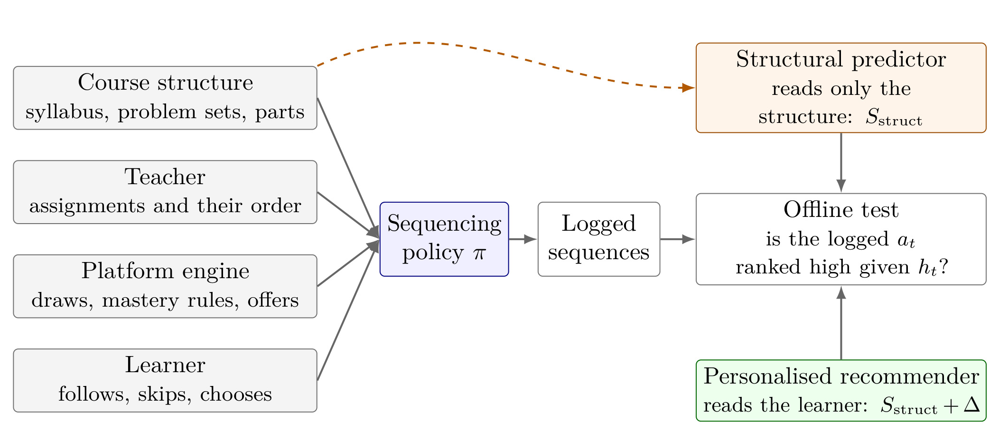
Figure 2 从左到右先把四个可能的决定方汇入排序政策，再经过日志形成离线测试的单一目标。课程模块描述题目分组、课程先后和测试部分。教师模块增加布置作业和指定次序。平台引擎按题组抽取、掌握条件和主动推送筛选活动。学习者可以跟随、跳过或自己选择。四个方框汇聚后，评测看到的是做了哪道题，以及此前做过什么。右上结构支路代表用课程和群体后继规律打分的参照。右下把能读更长历史的排序器画成结构分加增量，表达可报告的指标分解。它并未假定两个算法的打分函数实际相加，也没有规定个性化模型必须显式读课表。若同一个人被换到另一个推荐模型，下一次练习可能随活动曝光改变，离线图中的测试目标却仍来自旧策略。图末端因此连到排序评测，缺少反事实学习行为和新活动的学习结果。这个缺口决定了正增量可以解释为更好地对齐旧日志，进一步主张教学收益仍需另一项研究。
符号解释：$G$ 存放所测四个结构预测器，$F$ 存放所测个性化方法，$M$ 为同一批样例上的平均排名指标。$S_{\mathrm{struct}}$ 是候选结构基线的最高分，$\Delta(f)$ 是待比较模型相对这一最高分的有符号差，$\rho$ 的分母为两组所有受测方法中最高分。若最强结构方法也是全局最强，$\rho$ 为 1，个性化差仍可能显著为负。分母只是本次已测集合的上界估计，增加更强个性化方法或者更强结构方法都可能改变数值。附录还将赢家选择移到验证集，检查在测试集择优是否扭转主要结论。
2.2 结构基线、全目录协议和分层估计
四个结构预测器只依赖共享统计与最后活动。POP 按训练中做过活动的学习者人数排序。ORDER 为每个活动计算首次出现相对位置的中位数，以最近活动为起点先列出后续未做的，再考虑位置较早的。CONT 把同一容器内的未做活动置顶，通过 ORDER 排余下候选。MC 对最近活动的已有后继使用训练转移频次，缺少直接转移信号时以流行度回退。前三种的最大值也单独作为元数据基线与最佳受测方法作比，可以定位优势集中在总体转移还是显式分组。如下式将后继统计写成可比较的频率，分母对同一个前驱的候选一致，基本排序和转移计数所给顺序一样。
符号解释：$a$ 是最近活动，$b$ 是可能的后继活动，$C(a,b)$ 是训练内该转移的计数，$c$ 遍历后继。在没有观察到相应边时，该边的经验概率为零，整个前驱没有足够信息时需要回退。这个比率也用于后面的重加权。它基于训练已经发生的活动对，以简化表示论文所用的训练转移频率，没有把每个候选的实际曝光概率当作可观测量。
个性化参照则让模型读取更多历史。ItemKNN、RP3beta、EASE 和 iALS 从共现或隐式反馈建立历史与候选的关联。SKNN 检索重合度较高的历史学习者再对候选投票。MCLD 及其自适应邻居版本从历史相近同学的已通过活动找建议。ZPD 与 DKT 都选预测成功率接近预设难度的活动，前者用平滑的技能正确率，后者用按技能和结果序列训练的知识追踪网络。SASRec 以活动和通过状态共同构成序列输入，训练目标是交叉熵预测下一活动。知识追踪的预测目标与激活推荐政策的目标因此需要各自验证，本研究对二者分别给出预测正确性和活动命中的证据。
P1 用每个学习者最后一个全新的活动作为测试目标，前一个全新的活动作验证，在该验证活动前截断训练。P2 在全体时间线第八十百分位切分，从跨越切点仍活跃的学习者收集首次切点后新活动，超参仅靠训练期内第七十百分位的较早切点选择。两种协议皆排除历史中做过的活动。设单样本真实目标的名次为 $r$，折损可写成如下形式。
符号解释：$m(r)$ 是单正例 NDCG@10 的得分，$\mathbf{1}_{r\leq 10}$ 为进入前十的指示函数，$\log_2$ 为以二为底的对数。对于打平的候选，论文按其能占据的每个名次上的得分取精确期望。这样同分块里的题号或者数据库返回顺序不会产生额外优势。差值置信区间通过同一批测试样例上的配对自举获得，组间显著性报告经 Holm 校正的值。误差范围处理了测试样本变化，训练种子与跨数据协议的不确定性通过附加实验呈现。
2.3 用结构候选评估语言模型
LLM 实验将每次排序固定为一个真实目标和十九个该学习者未做的负例。随机池按未做项均匀抽取。结构池取 MC 或 CONT 排名前二十的候选来源，再抽取满足条件的负例。所有排序器共享各自协议中的候选，因此可以在同一列比较 Qwen、纯词重合基线与马尔可夫基线。可能的偏向由构造本身决定，结构负例是这些启发式最愿意选择的候选，容易挤掉真项，有些结构方法也会在这一列跌到随机线以下。相对而言，随机池容易让活动名称与最近活动的主题一致性直接区分真项和负例。两套候选分别测量不同难度的辨别能力。
论文固定 Qwen2.5 同一家族共享分词器，小两档用 BF16，大两档以四比特量化运行。原先的字母多选会引入小模型偏好某个字母的现象，最终用逐候选名称的条件似然，扣除无历史时的候选名称先验。提示读最近十个活动及各自状态。词重合基线只读取候选名与末活动名，能独立测出通过主题匹配获得的分数。把论文描述的平均对数概率写成公式如下。
符号解释：$c$ 是候选活动名，$c_j$ 是名称的第 $j$ 个词元，$n_c$ 是词元数，$H$ 为带历史提示，$H_0$ 为移除历史的受控提示。$\ell$ 用长度归一化，$s$ 衡量历史相对名称先验的贡献。似然差用于候选相对排序，真实成功概率需使用答题结果另行校准。若两个活动只共用同一个技能名，该打分无法区分它们。真实历史的截断还使该路径和使用完整历史的传统排序器所见上下文不同。
2.4 已知需求模拟和结构校正
为检验离线排序究竟偏向哪种策略，作者另造一套可观察所有学习者薄弱单元的模拟。每次由平台出题的概率为 $\alpha$，剩余机会才由学习者按训练需要从自己的薄弱单元选择。作者可以同时计算模型对日志的预测值，以及前十推荐内有多少题真正属于该学习者尚未覆盖的弱项。现成的 NEED 参照始终按需要选题，另一条 PI 参照知道日志生成概率。通过改变平台决策比例，研究让两类参照有机会分开排序。
符号解释：$R_{10}$ 是一条请求的前十个推荐活动，$U_{\mathrm{weak}}$ 是这一学习者未做的薄弱单元活动集合，交集大小衡量模拟中的需求匹配。这个定义只在设定的生成模型内具有清楚的真值意义。它没有度量任何真实课程的知识增长，某些比例是由设计目标直接保证的。
作者随后给每条测试记录赋权。重复频繁的转移本身已经能被 MC 识别，低频转移受到更大重视。结构校正的核心是提高低频转移事件对评测分数的权重，保留不加权的生产分布视角供对照。
符号解释：$i$ 遍历测试事件，$p_i$ 为最近活动到真实目标的训练转移频率，$m_i(f)$ 为模型在该事件上的 NDCG@10。分母保证加权平均可比较，概率下限把最大权重限制为一百，避免少量极罕见事件无限支配汇总。这个设计会刻意减弱 MC 擅长的常见边。若新路径缺少足够样本，截顶权重无法补出替代政策的反事实反馈。因而校正结果适用于诊断，不应被解释为部署收益的无偏估计。
3. 实验结果
3.1 从训练集路径到全候选主结果
八个数据集分属五个平台。移除多技能重复记录、合并同活动的连续响应以后，半数及以上回答正确视为通过，活动少于五步则被去除。ASSISTments 的 A09 按题组，A12 和 A17 缺少题组标识以技能做代理，A15 的活动直接由题组组成。EdNet 约四千四百人的公开子集以题包为活动，同容器为考试部分。Junyi 从公开数据随机抽两万人，以知识地图主题为容器。Eedi 以教师布置的小测为活动，以学习方案分组。ACT-MOOC 的匿名活动既无容器也无通过记录，CONT 退化到 ORDER，依赖结果建模的两条策略没有相应分数。
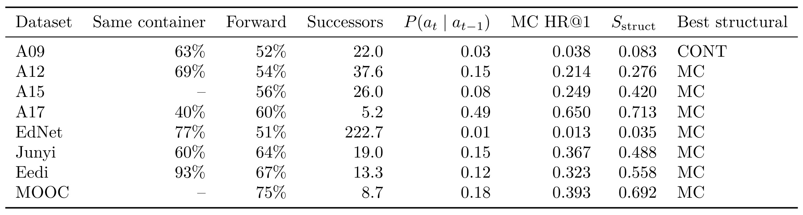
Table 2 按数据集并列显示同容器率、向前活动比例、每个前驱的经验后继数、测试真实边的平均训练概率、MC 的首位命中和最佳结构 NDCG@10。Eedi 的同容器率达到百分之九十三，具备很强的活动范围约束，MC 仍超过只读同容器的规则。A17 的同容器率仅百分之四十，但后继数为五点二，平均真实边频率约零点四九，MC 单项命中达到零点六五零，说明容器代理较粗时总体转移可以更集中。EdNet 的同容器率为百分之七十七，却有二百二十二点七个后继，经验真实边约零点零一，MC 首位命中只有零点零一三。读这两列会发现，留在同一个区域能够缩小范围，但区域内的候选多寡和其选择机制仍决定辨别难度。A09 是唯一由 CONT 拿到结构最优的语料。其同容器率百分之六十三，较大的目录仍使最佳结构 NDCG 只有零点零八三。没有明确容器的两行保留空项，群体马尔可夫参照依然可算。上述转移统计帮助解释为什么不同数据集的离线可预测程度差异很大，不能用原始总分跨任务排教育产品优劣。
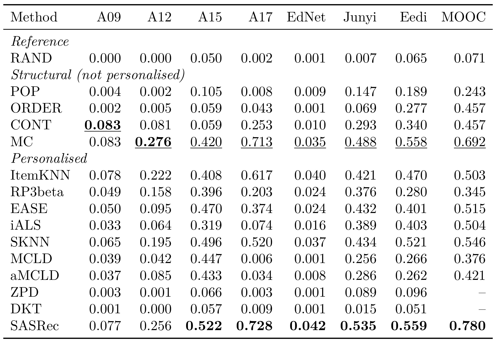
Table 3 在每列把随机参照、四个结构预测器和十种个性化方法放在同一份全目录排名里。A12 的 MC 得分为零点二七六，优于 SASRec 的零点二五六，通常被当成传统参照的一阶统计在这里决定最强基线。A15 的 MC 为零点四二零，SASRec 到零点五二二，按多项历史检索的 SKNN 达零点四九六，基于同伴的 MCLD 为零点四四七。这个活动粒度为题组的场景中，个性化模型仍能测到明显增量。在匿名 MOOC 上，课程顺序即可获得零点四五七，加入群体转移到零点六九二，序列模型再提高到零点七八零。其中一部分是跟随共同路径的分数，另有一部分可能来自读取更长历史。ZPD 和 DKT 按预测的适宜难度选题，其得分往往很低。正文报告 DKT 对目标活动的结果预测 AUC 约零点六五至零点八二，七个有结果标注的数据集都超过平滑成功率估计。即使掌握预测更好，给定练习难度目标的策略也可能被下一活动命中评测压低。由此可见，要评估知识追踪模型的预测和推荐决策，至少应有分别对应的标签，应分别测量两类目标。
表中还可看到正例筛选本身改变了随机基线。目录较小的 A15 或 Eedi 更容易被随机方法碰巧排中，而 A09 和 A12 的随机分在三位小数展示中近零。各模型都按相同的历史动作完成候选资格过滤，目标既已被定义为新活动，这张表的差来自允许候选的相对排序，因此不宜为教学产品追加是否应该重做旧题的判断。实际练习系统常把间隔复习插进新内容，两类任务可以共用模型，但需要分别定义入口条件和可行候选，否则排除旧题的离线协议无法代表全部请求。
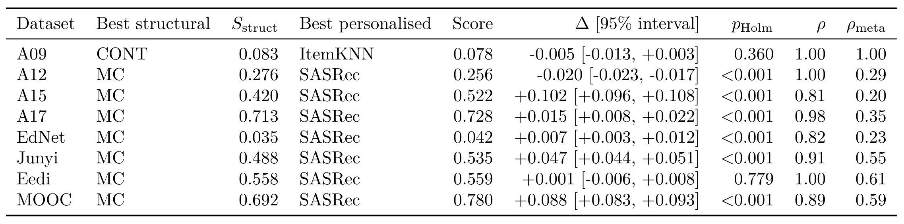
Table 4 把每列赢家收拢为两行来源，并给出八个配对差；置信区间描述同一测试样例重采样后的差值，显著性使用按数据集多重校正后的概率。A15 的正增量为零点一零二，区间零点零九六至零点一零八。EdNet 的正增量只有零点零零七，即使区间紧且经过校正显著，绝对命中仍很低。A12 的差为负零点零二零，与零有统计区分。A09 的差为负零点零零五但区间跨零。Eedi 该次只高零点零零一，校正概率为零点七七九。附录额外三次重跑时 Eedi 都有显著正差，因此这个数据集的主结果对训练种子敏感，不能用单次结果等价断言无个性化收益。总体有五个正向显著的语料，结构占该批比较最好分的零点八一到一点零零，中位数零点九五。末列拿掉 MC 后，中位数降至零点四五，A15 为零点二零、A12 为零点二九。最强的路径参照来自日志中广泛重复的后继，而静态课程图只能解释其中一部分。附录在验证集选赢家后主要趋势相似，也为测试集组内择优的比较保留了敏感性检查。若在基准发布前锁定结构参照，A09 常规全目录上的容器模型和多数语料的一阶模型都有直观解释。若在测试后才给每个数据集选基线，正差通常更难取得，而个性化组也享受从多种模型中选择最高分的机会。因为两组方法数不同且训练成本差异大，逐样例配对自举主要解决给定比较的抽样误差。将候选模型与超参早一步定下来，可减少把组内赢家选择经过的数据依赖误当成方法自身稳定性。
3.2 新边、跨容器与活动发起者
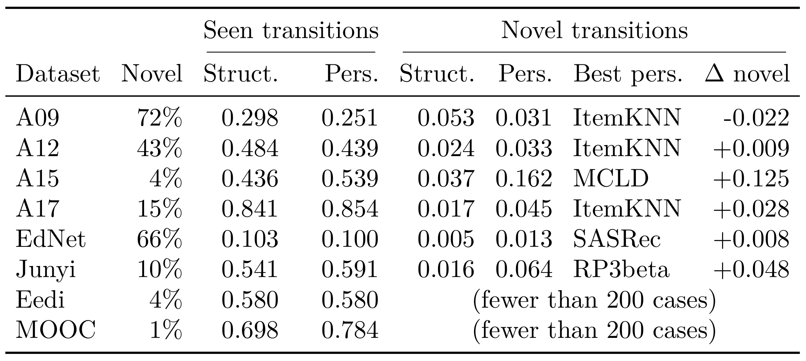
Table 5 保持同一全目录任务，把训练出现过的最近活动到目标活动的边分开计算。新边占比在 A09 有百分之七十二、EdNet 有百分之六十六，两个场景在长尾转移上的绝对 NDCG 分别只有零点零五三和零点零零五的最佳结构分。A09 的最佳个性化分降到零点零三一，EdNet 虽相对结构升到零点零一三，仍很难把真项排进好位置。A15 的新边中 MCLD 得到零点一六二，对比结构零点零三七，正差显眼，但新边只占全部测试的百分之四。Junyi 的 RP3beta 在新边中得零点零六四，已见边最佳个性化得零点五九一。Eedi 和 MOOC 在新边切面少于两百例，因此原表没有给出估计。这些是已出现活动之间的新组合，和新活动冷启动的任务范围有别。若验证一个通用排序器确实增强陌生路径的预测，需要固定适当规模的新边样本，报告绝对得分、分组占比和区间，并检查是否只凭少量罕见案例形成过高相对提升。
从运行角度，查一条边是否从未出现只需要训练期转移表，处理匿名 MOOC 也不依赖课程元数据。它会同时受到训练量和策略变化影响，故换切点、扩训练样本或者把活动编码改成上一级容器，都会改变新边分组。可额外记训练中同一前驱出现过多少次以及测试目标在总人群中的流行程度。这样能区分没有充分机会观察的稀疏边与训练已大量覆盖前驱却首次跨向目标的边，两者需要的模型改进不同。论文这张表按现有分组只回答当前协议中的平均性能。
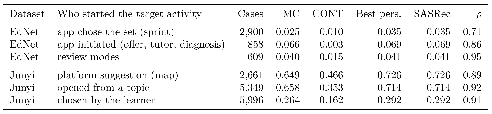
Table 6 的两块数据用于读发起方及入口。均一平台的地图推荐组有两千六百六十一例，MC 与 SASRec 分别为零点六四九和零点七二六。学习者自行选择组有五千九百九十六例，二者降到零点二六四和零点二九二，对应的组内结构份额分别为零点八九和零点九一。从主题入口打开的组也保留较高的两种分数。即使能使用较长历史，模型仍更容易预测产品推荐或固定入口形成的行为。EdNet 的冲刺模式是用户先选考试部分、应用选择题包，表行“应用选择题包”不能简化成与均一平台用户自主选择练习完全相同的一组。自适应邀请、辅导或诊断主动发起的八百五十八例，MC 与 SASRec 分别为零点零六六和零点零六九。复习模式名义上可重复以前的问题，但目标的活动定义仍是合并和过滤后的新活动。各入口之间题池、目标和可选项不同，预测组间差只提供描述性来源对照，不能归因成更换入口会带来的影响。
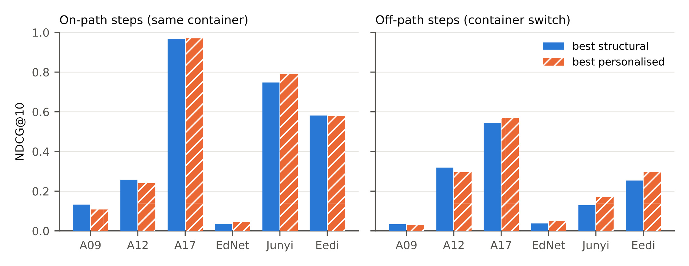
Figure 3 左右图共享 NDCG@10 纵轴，每个数据集都有最佳结构和最佳个性化两根柱。同一容器的 A17 结构柱约零点九六八，跨容器时约零点五四四。均一平台的差更大，同容器约零点七四八，跨容器约零点一三零。六个有容器的数据集里有四个发生明显下降。不过比较同组两根柱与比较同色跨面板柱是两种问题。A17 的个性化组内差在跨容器时约零点零二四，同容器时约零点零零一。均一平台跨容器时仍有增量，却没有超过同容器组的绝对增量。A12 结构分在跨容器反而更高，和把技能当作题组代理的定义有关联可能性，论文没有据此识别因果原因。EdNet 两边都难。图只有组内最优汇总，新边属性与跨容器属性也能重叠。实际审计时可以交叉切分，以判断难度增加来自题目变化、容器变化，还是二者都有。若保留同容器与跨容器两个请求入口，也要分别报告其线上触发占比和目录候选池大小，以便离线误差能映射到对应的服务决策。
3.3 LLM 候选评估的两种负例
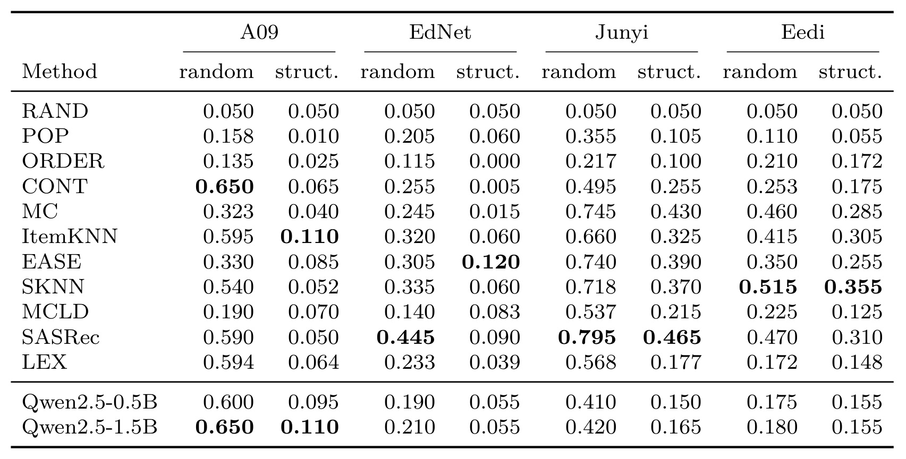
Table 7 以 HR@1 衡量二十选一，每个有标题的数据集和每类负例分别二百例，随机期望为零点零五。A09 随机池中 Qwen 一点五档为零点六五零，与 CONT 相同，零点五档零点六零零也接近纯词匹配的零点五九四。换到结构池后，一点五档降到零点一一零，即和 ItemKNN 同分。EdNet 下两档 Qwen 都是零点零五五，接近随机，EASE 的零点一二零为该列最佳。这样的低命中也表现在结构模型 MC 上，结构池正是从 MC 和 CONT 认为最有可能的候选中取负例，因此其降分有可预期的候选构造原因。在均一平台结构池中 MC 为零点四三零、SASRec 为零点四六五、Qwen 一点五档仅零点一六五。Eedi 的 Qwen 得零点一五五，MC 为零点二八五、SKNN 为零点三五五。跨设置读模型差异，只有先固定候选的来源与真实项纳入规则、再与同池基线比较，才知道模型是在利用显眼话题差还是能够在看起来都合适的活动中作排序。这里的首位命中率和前面的全候选 NDCG 面向不同的目标名次与候选范围。
此处每组都是先把目标放入列表再取负例，量化的是已召回目标时的排序条件性能。若产品有先检索再用大模型重排，下一步需把首阶段召回覆盖率一起统计。把池子人为构造成二十项虽省算力，但模型看到的分布能够与线上召回显著不同。为评估一个新候选生成器，可以在固定的第一阶段结果与结构近邻池分别测排序器，再切开候选内名称重复率和目标所在的事先排名。这样能看到收益来自给真项创造更接近训练的候选环境，还是来自真项已有资格时的辨别能力。
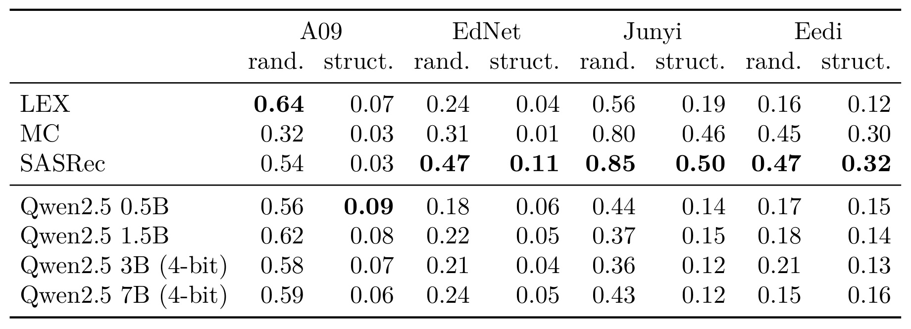
Table 8 将比较缩到各候选设置中同一批前百例，加入三十亿和七十亿的四比特模型。以 A09 为例，随机负例时词匹配零点六四，四档语言模型最高零点六二。结构负例时最小模型零点零九，最大的反而为零点零六，两者样本差相当于三个首位命中。均一平台结构池中最大模型只有零点一二，低于中档的零点一五，而 MC 零点四六、SASRec 零点五零。Eedi 结构池中最大模型从最小档的零点一五到零点一六，未形成跨语料一致提升。论文据此说四档容量范围内未见系统性规模收益。这里每单元只有一百例，观察到的小数差可能相当于一两名学习者，且大容量与量化格式、推理框架一起变化。表中没有完整候选池混排序、多语言领域适配、额外检索资料或独立的更高容量对照。一个稳健的结论是该轮结果对候选集构造更敏感，四档容量变化没有解决这一问题，其他模型配置仍需同条件再测。本文选择统一分词器有利于控制名称被拆成多少词元。量化模型更适合在普通 CPU 上复算，却也提示规模对照可进一步补一组同精度、同题名、同提示的实验，再单列按多个词元组成和重复名称的题目类别。较好分数若只出现在少数有丰富词义的名称，技术路线首先需要更完备的题目元数据。若在简短名称和领域知识上仍优于词重合，才有更直接的语义证据。
3.4 全局时间切分的稳健性
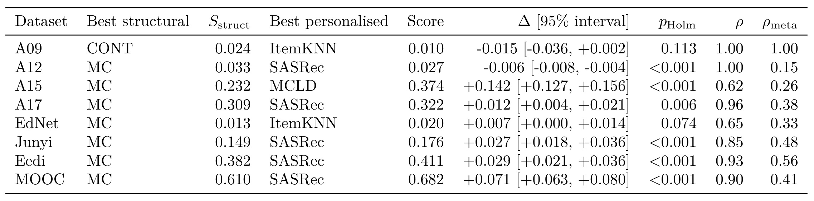
Table 15 沿用主表指标，把每人的留最后活动替换为共同时间切点。全部数据集的最佳结构分只有原协议的零点一二至零点八八，中位结构份额仍达零点九一，范围零点六二到一点零零。A15 尤其值得看，MCLD 以零点三七四对 MC 零点二三二，正差零点一四二，其个性化赢家也从 SASRec 变成了同伴式模型。A12 两种协议仍由结构领先，差在新切分下为负零点零零六。Eedi 从 P1 主运行无明确差转为 P2 正差零点零二九且区间正向，EdNet 的零点零零七经 Holm 校正后概率为零点零七四，不够作为显著结果。A09 的测试仅一百五十八个学习者，区间较宽。全局切分保证训练不读其他学习者更晚活动，但切点前的历史长度、样本活跃条件和目标定义也变化，绝对降幅不能单独归给未来信息泄漏。两种协议保持七个语料的 MC 结构优胜格局，同时让少部分赢家和统计结论有变化，适合把鲁棒和不稳健的子结论分开报告。作者提取的是切点之后第一项新活动，避免重度学习者因多个待测任务而在均值里加权更多，但也筛掉只在过去或将来活跃的人。因此两个协议不只时间范围有别，同一个人的前缀和目标也可能不同。若复现时发现越靠近当前出题时间错误越少，需进一步按切点距离、学习者留存和前缀长度分桶，才能判断提升是否出自模型更熟悉近期课程规则。
3.5 已知需求与真实日志的结构校正
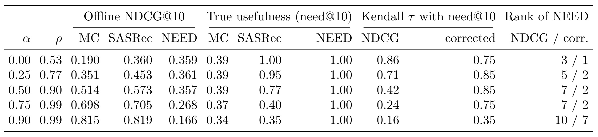
Table 9 以平台替学习者决定活动的比例为行，以三类模型的日志命中、需求命中、模型排序的 Kendall 相关及 NEED 的名次为列。三千人各有三个弱单元，弱项作答成功概率设为百分之四十五，其余设为百分之八十五。十个单元各十个活动，每人产生二十至四十个新活动。当四分之三的活动由平台决定时，结构份额达零点九九。SASRec 的日志分零点七零五，MC 零点六九八，NEED 只得零点二六八，按全部受测方法的离线分排第七。需求命中顺序相反，NEED 为一点零零，SASRec 为零点四零，MC 为零点三七。当平台份额为百分之九十时，原分与需求排序的相关仅零点一六，校正后也只有零点三五。平台份额为一半或四分之三时，校正相关为零点八五和零点七五，确实恢复了部分区分能力。这里的相关比较的是十一种方法的排序，样本与指标都不等于学习者级正确率。高平台控制时还有少数自主样例可被加权，剩余信号弱到无法靠重设权重得出强结论。
对照两个极端还可看到，校正本身有代价。平台根本不决定活动时，原分和需要排序的相关为零点八六，校正降到零点七五，同时 NEED 名次从第三到第一。单个参照更靠前与所有模型的相关更高是两个不同的结果，不能用前者代理后者。按训练频率赋权的诊断对中等平台混合率更有帮助，在需求本身已主导生成的环境里可能打乱其他方法的次序。模拟没有声称存在一个通用权重阈值，可以从表的不同设置读出重加权何时更贴近设定真值。
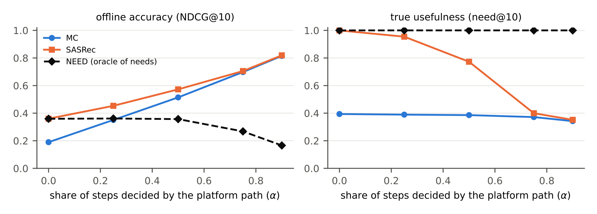
Figure 5 用左右两个面板分别看同一条横轴上日志 NDCG 和模拟需求命中。蓝线 MC 和橙线 SASRec 随平台出题比例增高，在左侧不断上升，最右端十分接近。右面板里橙线从需要匹配完美快速掉至约三分之一，蓝线在相近范围微降。黑色 NEED 左图下降而右图一直停在一点零。两幅图有同样的零到一量纲却衡量不同事件，故不能把左图高于右图的距离解释成实际教育损失。橙线起点能追上已知需求策略，说明该模拟中序列学习可以在日志由需求驱动时恢复有用偏好。平台控制较强时，同一模型家族会改为拟合更常出现的课程路径。读单条模型曲线可能以为上线效果随分值增高而改善，将两种可观测结果并排使这种推断落空。模拟使用固定单元和已知弱点定义，没有长程教学反馈，能证明这种反转在明确定义的场景下可能发生。该图还提示同时画出两种指标的趋势便于做目标检查，避免把对数折扣产生的小数和需要占比直接相减。
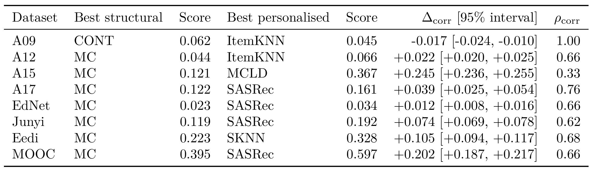
Table 10 回到 P1 的真实日志，为每条测试记录按训练 MC 转移频率的倒数赋权。七个语料的最佳个性化方法比最佳结构参照分高，且报告的配对置信区间为正。A15 的 MCLD 达零点三六七、结构 MC 零点一二一，作者公布增量零点二四五。MOOC 的 SASRec 为零点五九七、MC 为零点三九五，增量零点二零二。A12 则从未校正的结构基线领先反转为 ItemKNN 零点零六六、MC 零点零四四。A09 仍由容器规则领先，个性化差负零点零一七。校正结构份额从三分之一到一点零零，中位数约三分之二。表内小数取整可能使两显示值相减与原文差列略异，直接读差列更稳妥。权重定义主动把 MC 预测弱的样例放大，因此应把它视为另一种困难场景分布的评估，和普通分同报。原文没有记录这些情况下所有可被分配的题，也没有观察换政策后的结果，正区间估计只说明排序模型在该加权日志目标上超出结构参照。对可能的改进范围，比定性表述需要个性化更可查验。重加权若用于工程验收，还需关注权重分布与有效样本量，例如同时报权重最大组覆盖多少人、加权指标是否过度集中在某个入口。本文的截顶让每条日志贡献有上限，却没有令不同候选都具有可观察反馈。把权重改成其他下限、把同容器稀有事件与跨容器事件分层，并结合未经加权的原分，可帮助发现表面大增量来自哪个子群。这样的记录也便于估计未来小规模在线对照所需的可用流量。
4. 总结
4.1 对评价设计的判断
论文给出最强结构基线、相对结构增量和结构份额三项诊断，能把算法成绩拆成比较对象明确的结果。可保留普通 NDCG 看业务常见请求，在相同的人群、前缀和候选上另报相对 MC 的绝对差。结构仍然值得作为生产服务的一部分，例如教师指定的作业可能应直接遵循，退出容器后才由模型在允许的内容集里排序。产品日志如果标明活动来自教师要求、引擎推送、主题导航还是学生自由选择，就可在协议设计阶段对每类请求分别建基线。LLM 评估的候选也应尊重服务可达集合。随机负例和结构负例反映的两种难度都可以测，同时保留词重合和结构启发式才能定位模型到底解决了哪一步。
4.2 局限
- 真实语料只有已发生的行为和部分结果。不能由离线正差推出新的教学决策价值，模拟的已知需求仅在给定生成机制内有效。若未来关心学习进步，应采集练习后同技能表现及延时保持等反馈。
- 活动粒度和容器元数据跨平台不统一。技能代理题组可能把实际同一道作业链拆开或错误合并，日志看不到的适用性约束也可能让全目录评估包含不现实候选。匿名 MOOC 缺少题名和答题结果，因而无法用来判断 LLM 排名和知识追踪的优劣。
- Qwen 只测同一家族四个容量，较大的两档被量化并在每集全设定各一百例上比较。候选是否使用唯一题名以及上下文长度也限制判断，无法外推到更强模型或在题库描述与学习目标上做过训练的排序器。
- 结构转移频率来自训练日志。权重由已实现的群体转移频率决定，实际曝光倾向仍未观测。罕见的异常或产品改版也可能被集中放大。学习者确定选哪道题与平台先展示哪些题仍未拆开，困难样例的加权分无法提供正交的反事实判断。
- 部分序列模型遇到训练预算，Eedi 的显著性随重训变化，A09 在全局时间切分只有一百五十八例。置信区间、数据协议和运行重复性需要一起读，不能把展示中加粗的一格当成稳健排名。
如果目标是把新流程交给真实学生使用，排序器还得控制推荐难度、课程合规和教师指定作业的覆盖。这些约束在论文中通过已有课程结构间接出现，工程评估可以把硬资格过滤固定住后再比较模型，保留每个观察窗口的课程计划版本。这样可避免内容已下线、作业已收卷等变化被统计成个性化选择失误。
4.3 可直接复核的方向
- 用作者公开包先复现旧边、新边与结构份额，逐集核对 P1 和 P2 的相同过滤规则和打平处理。跑多个种子，并用验证集独立选组内赢家，观察正增量是否留在相同数据集。
- 对真实教育请求收集当时允许推荐的活动、发起方、题目状态和任务归属。用同一候选集同时计算 MC、CONT、词匹配和语义排序，分别在同容器与跨容器切面统计曝光支持和测试案例数。
- 若能够安全做分流，先在确有多种合适选择的场景试验，例如学习者主动选练习或完成既定作业后的自由练习阶段，再看技能迁移和可持续的学习反馈。课程强制编排仍可用日志一致性作工程指标，学习效果由能观察到的目标另行检验。